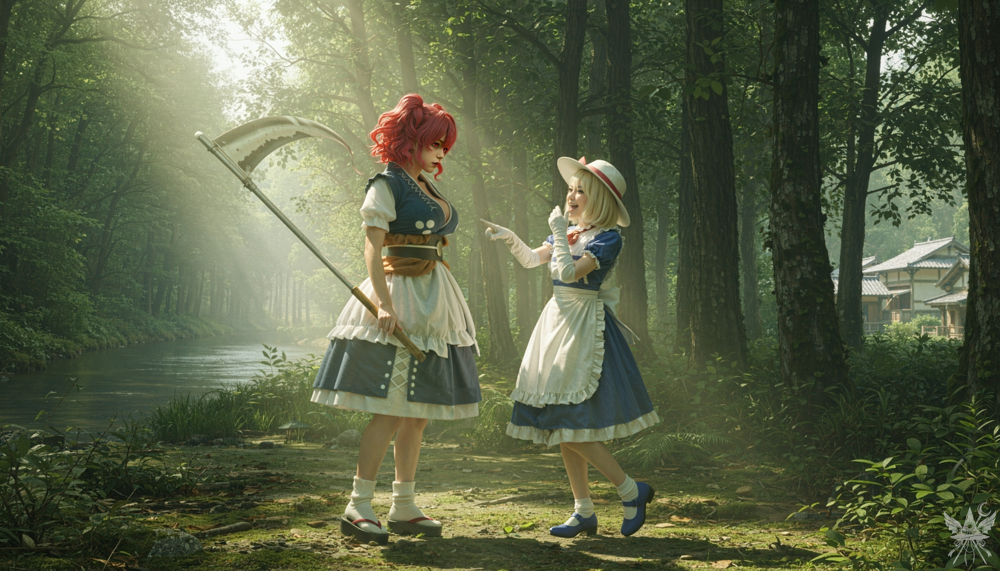
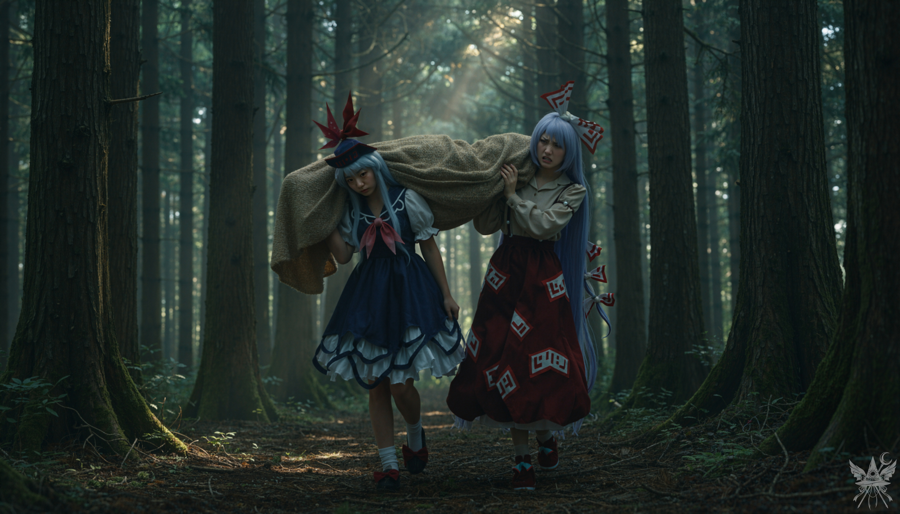

道徳だの善悪だの、崇高な理想のためなら多少の犠牲もやむなし――そんな偽善を長々と垂れ流すこともできただろうけれど。私には退屈な上に陳腐すぎるわ。ここでどんな綺麗事が並べられたか……想像してみてほしいの。
まるで冷蔵庫に美味しいケーキが入っていて、いつでも食べてもいいような、そんな甘い期待感。でも、ケーキなんて物足りないわよね。もっと刺激的なものがいいでしょう？ そう、神様ごっこでも始めようじゃないの。
埃っぽい匂いが充満する屋根裏部屋。床に無造作に散らばった大量の古書に囲まれ、カナと並んで寝転んでいた。そこは、周囲を翻弄する少女の秘密の隠れ家。皮肉なことに、この奔放なポルターガイストに奇妙な親近感を覚えていた。世界を「正す」という大それた野望、閻魔をこの宇宙から消し去るという途方もない計画……。まるで世界のすべてを掌中に収めるかのような大胆不敵さは、あまりに甘美だった。
まずは、人間の里にある龍神の石像を破壊する。人間と龍神を敵に回す不遜な企てに、異論はなかった。早速、死神の小野塚小町に変身して実行に移そうとしたが、前回の変身は昨日の午後四時。二十四時間が経過し、制約が解けるまでには、まだ数時間の猶予が必要だった。
時間を無駄にせぬよう、山積みの本の中から上白沢慧音の著書『幻想郷の歴史』を見つけ出し、古い紙の匂いを吸い込みながらページを貪るようにめくり始める。カナに問いを投げながら読み進めるうちに、幻想郷の秩序や主要な地名が頭に染み込んでいった。紅魔館、霧の湖、妖怪の山、竹林、魔法の森、三途の川の岸辺、人間の里、永遠亭……。続いて『求聞史紀』を読破し、この地の有力者たちについても語り合った。カナはスパイ活動や盗聴の経験が豊富で、その多くと接触したことがあるようだった。
「チルノ、リリーホワイト、サニーミルク、ルナチャイルド、スターサファイア……。あ、プリズムリバー三姉妹にも会ったわよ！」
意気揚々と名前を挙げるカナを遮り、逆に会ったことのない者は誰かと問う。返ってきたのは、スカーレット姉妹、図書館の魔女パチュリー・ノーレッジ、西行寺幽々子、そして月の姫である蓬莱山輝夜。
「『花の異変』で、四季映姫にも会ったわ。小町が魂の運搬をサボって、霊が溢れかえった時のことよ」
しばらくすると、エレンが昼食に誘ってきた。濃厚なキノコスープの香りに続いて、焼きたてのケーキの湯気。そして6杯目になる香り高い紅茶。少し甘すぎるのが難点だった。
「エレン、砂糖は控えめにしてほしいのだけれど……」
「お砂糖は全然入れてないよ！ この甘み、ある珍しい葉っぱから出てるんだから！」
（……せめて、ルイズが持ってきたものでないといいけれど）
内心で毒づきながら、ソクラテスの視線に気づく。毛むくじゃらの妖怪猫は、もはや膝の上に乗ってこようとはしなかった。ただ、じっとこちらを見つめている。思考を読み取っているかのような、不安げな眼差し。これからどこへ向かうのか、猫にもエレンにも一言も漏らしてはいなかった。
午後三時四十五分。二人は屋根裏部屋を飛び出した。霧雨が上がり、雲間から射す陽光が、巨大なパッチワークのように幻想郷を光と影で彩っている。拠点に選んだのは、人間の里近く、三途の川沿いに広がる小さな森。死神が現れる場所として、これ以上の舞台はあるまい。湿った土の匂いが立ち込める空き地で、互いの冷たい手を握り、再会を約束する。カナ自身は変身の機会を温存するために潜伏する手筈だったが、その活躍をどうしても見届けたいと、隠密に里へ同行することになった。
深く息を吸い込み、意識を整える。喉のチャクラに熱を集中させ、あの死神の姿を鮮明にイメージした。
変化は劇的だった。視界が一段高くなり、傍らのカナは胸元に届くほど小さくなる。彼女はいたずらっぽく微笑み、まるで未知の玩具を眺める子供のような瞳で、変身の様を見届けていた。

湿潤な苔の匂いと冷涼な空気の中、唐突にもたらされた異質な質量の感覚。その静寂を切り裂くように、カナが腹を抱えて大笑いし、無遠慮な指先を向けた。
「ねえ、なかなか様になってるじゃない！」
腹の底から楽しそうなクスクスという笑い声。
「え、何がかしら？」
不意に漏れた声は、自身のものではない低い響きを帯びていた。重心の違いに戸惑う。
「その重み！ 小町の体になったら、やっぱりそういう不便もついてくるのね！」
「……羨ましいの？」
「自分で羨ましがる方が先でしょ？」
カナは意味ありげに胸元へ視線を走らせ、口角を吊り上げた。
確かに、小町の体躯は単なる飾り以上の重みを伴い、その物理的な主張は慣れないものだった。感覚を馴染ませるうちに、手にしていた杖が使い込まれた大鎌へと変貌していることに気づく。試しに振ってみたものの、刃は草の表面を滑るだけで、微かな傷さえつけられない。安全装置のように制限されたその感触に、変身があくまで「外見」のみであることを再確認した。
変身前に持っていたジェット箒を探したが、視界には映らない。しかし、触れてみれば確かな手応えがあった。ただ透明になっただけで、機能は生きている。死神が己の力だけで宙を舞っているように見える、完璧な偽装だ。準備は整った。空へと舞い上がり、人間の里を目指す。
ゆるやかな坂の両脇に、木の匂いが染み付いた古びた家々が並ぶ。二百年ほど時が止まったような、静かな集落。その中心にそびえる、唯一の三階建ての建物へと進む。見上げる村人たちの物珍しげな視線を全身に浴びながら、堂々と地を踏みしめた。
「村役場」。集落の中枢。その正面、角の取れた石畳が広がる広場の中央で、巨大な龍神の石像が里を見守っていた。
見えない箒を卵へと戻し、懐に忍ばせて広場へ降り立つ。人影はない。だが、家々の窓や路地の暗がりから、こちらを窺う無数の息遣いと視線が突き刺さる。僅かに緊張が走った。
石像をどう壊すべきか。鎌を使うのは躊躇われた。これは姿を変えただけの杖。精巧な魔具を石像ごときで傷つけるのは、美意識が許さない。
喉のチャクラに最大限の魔力を込め、鎌を媒介に石像へ叩きつける。耳障りな爆裂音と共に表面が黒く焦げたが、像は微動だにしない。
「おい、そこの幽霊女！ 何をしておる！」
役場の窓から男が怒鳴り声を上げ、広場に村人たちが集まり始める。
（まだ間に合う……今がチャンスよ）
腹の底から声を絞り出し、冷徹な死神を演じて宣言した。
「閻魔大審議会の御意志を体現せんがため、ここに参上いたしました！ これより、審議会は天界及び龍神への宣戦を布告いたします！ よってこの龍神の石像は不当なり。排除する！」
どよめきが怒号となって群衆を染め上げる。だが、構わずジェット箒を呼び戻し、空へと舞い上がった。
上空から獲物を見下ろす。
（これで最後よ……！）
弾丸のように急降下し、渾身の力を込めて足を振り抜く。狙いは一点、龍神の頭部。
風を切り裂く轟音。足裏から全身を貫く、逃げ場のない衝撃。硬質な石材が砕け散る重低音が、穏やかな昼下がりの静寂を無惨に引き裂いた。舞い上がる粉塵と破壊の余波が、絶対的な暴力となって空間を蹂躙する。
ドシン、という鈍い衝撃。
龍神の頭が音を立てて崩れ落ちた。とっさに体勢を立て直し、間一髪で落下を免れる。
「ぐわああああ！」
背後から響く悲鳴と怒号。それを振り切るように、カナとの集合場所へ箒を加速させた。
「博麗の巫女を！ 早く！」
という村人の叫びが、遠ざかる風の中に消えていく。
激しい鼓動。全身を駆け巡る高揚感。
（やってのけた……本当にできたんだ。これでいい。村人もいずれはこの現実を受け入れるはずよ）
自らの行為を正当化する言い訳を頭の中で反芻しながら、必死に森へと急いだ。
森の中を箒で飛ばすのは目立ちすぎると判断し、地面に降りる。湿った落ち葉を踏みしめ、再会を急いだ。だが、約束の場所に彼女の姿はなかった。
「あら、小町。随分と早いじゃない」

朝霧を含んだ重い空気と、木漏れ日の美しさが残酷な対比をなしていた。場にそぐわない陰惨な気配。布のたわみから伝わる「動かない肉体」の重みが、軋む足音と共に生々しく響く。隠蔽工作の最中、不本意な目撃者である死神と遭遇してしまった。その緊迫感が、冷たい汗のように場を支配している。
振り返れば、二人の女性。歴史書で見た通りの姿――上白沢慧音と、藤原妹紅。彼女たちは長い袋を担ぎ、衣服には煤と血の匂いがこびりついていた。
「何の用だ？」
慧音の声には、鋭い警戒が混じっている。里の事件はまだ耳に届いていないようだ。
「私に何か御用かしら？」
小町らしい冷淡さを装って問い返す。
「お前こそ、この子の魂を連れて行くために現れたのだろう？」
不機嫌そうに眉をひそめる妹紅。
「違うわ。……で、それは一体何かしら？」
担がれた袋を指差す。
「ただの荷物じゃないさ。異世界から迷い込んできたやつの……遺体だよ」
妹紅がぶっきらぼうに吐き捨てた。
「幻想郷に迷い込むのは若い男ばかりだというのに。こんなにかわいらしい少女が。あまりにもむごい……」
慧音の声は自責と悲しみに震えていた。
「どこで見つけたの？」
「血の湖の近くの山さ。通りかかったら、悪魔の二人組が妖怪を襲っててな。遺体はその近くに転がってた。内臓まで真っ黒に焼かれちまって……あいつら、スペルカードルールをガン無視しやがった。許せねえ」
妹紅が拳を固く握りしめる。
胸騒ぎが、冷たい確信へと変わっていく。
「……少し、見せなさい」
二人が地面に置いた袋。慧音が慎重にその口を開けると、横たわっていたのは――ちゆりだった。
「……この子……死んでいるの……？」
震えを抑えきれぬ声で尋ねる。
「ああ、もう冷たくなっている。間違いなく……。妹紅が見つけてくれなければ……」
「悪魔って……どんな奴らだったの？」
「二人とも金髪で、フリルのついた洋服を着ていた。片方は白い翼を。妹紅と二人で追ったが、逃げられてしまった。……くそっ！」
悔しさに顔を歪める慧音。
（幻月と夢月に違いないわ……）
妹紅が慧音の肩に手を置く。
「落ち着きな。お前はやるだけのことはやったさ」
「どうしてもっと早く追いかけなかったのか。私は……本当に無力だ！ 襲われた妖怪の子供は、息を引き取る前に『悪魔は魔女を探していた』と呟いていた。一体、誰のことだと言うんだ……」
冷たくなったちゆりの横顔。乱れた髪、閉じた瞼。唇の端には、もはやあのいたずらっぽい笑みは浮かばない。
鮮やかに彩られていた騒がしい記憶が、色と音を失い、残酷な静寂と共に脳裏を駆け巡る。共有した時間、笑い声、怒った顔、別れの瞬間の温もりまでもが、すべて冷たいモノクロームの残滓へと成り果てた。絶望的な喪失感が、胸を抉る。
その時、背後の茂みが音を立てた。振り返れば、カナが立っている。
こちらに手を振って、早く行こうよ、と手招きしている。
[SYSTEM ALERT: 音響兵器デプロイ完了]
▼ 本章の絶望を1000%味わうための専用聴覚データ ▼
■ YouTube：『Echoes of the Red Void （赤の虚空のエコー）』